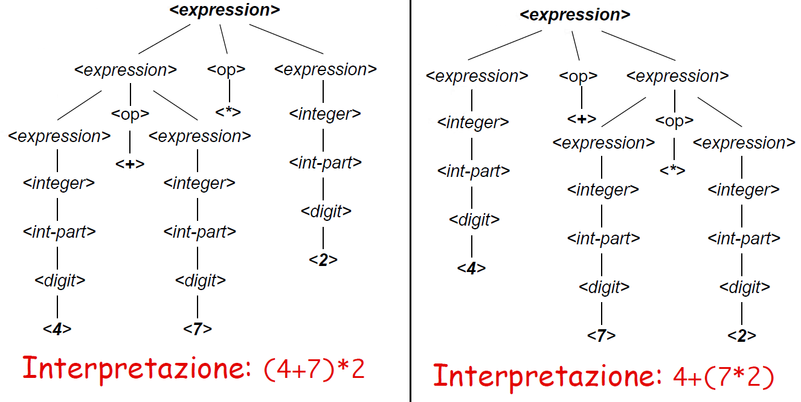

La sintassi definisce la correttezza dei programmi. Un’eventuale istruzione non corretta, infatti, non è fruibile perché non si,sa come interpretarla semanticamente. La validazione sintatticadi un programma, quindi, è condizione necessaria perché venga eseguito.
La sintassi di un linguaggio di programmazione è definita condelle regole grammaticali. Due elementi:
- Scanner: verifica la correttezza lessicale; riconosce sequenze di caratteri per trasformarle in tokens; lista di caratteri ->lista di tokens
- Parser: verifica la correttezza sintattica; riconosce sequenze di tokens per trasformarle in statements lista di tokens -> albero di statement
STATEMENT: Istruzione del linguaggio
Gli statement vengono rappresentati dal parser in una strutura ad albero: parse tree o albero di derivazione sintattica il quale rappresenta la struttura di tutti gli statement contenuti nel programma
Le regole grammaticali indicano come comporre i token per formare delle frasi
la definizione formale di una sintassi si esprime attraverso regole grammaticali
2 tipi di grammatiche:
- CFG : indipendenti dal contesto
- CSG: sensibili al contesto
CFG COME QUADRUPLA:
quadrupla ( T , N , S, P ):
T = insieme dei terminali
N = insieme di simboli non terminali
S = radice di un albero di derivazione sintattica
P = Regole di produzione a-> X con a appartiena a N e X appartiene N unito T
CFG COME EBNF:
Nell' Extended backus-naur form le grammatiche sone espresse in espressioni.
I simboli non terminali sono associati a regole del tipo:
<nonterminal> ::= <rule body> es: digit ::= 0|1|2|3|4|5|6|7|8|9|0 integer ::= <digit>{<digit>}
in un’ottica generativa o evolutiva (top-down) si costruisce
l’albero top-down, partendo dall’alto e specializzando via via
la sequenza fino ad arrivare a una sequenza di soli terminali.
In un’ottica di riconoscimento (bottom-up) si costruisce l’al-
bero partendo invece dal basso, dal risultato, che viene gene-
ralizzato.
Ambiguità:
Un linguaggio è ambiguo se esiste almeno una sua frase
generabile da due o più alberi di derivazione distinti

La soluzione generale consiste nel sostituire le regole che determinano l’ambiguità, sostituendole con regole più specifiche.
Si introduce il concetto di termine: l’espressione ora è ricorsiva solo nel membro di sinistra, data la nuova definizione;poi l’operatore dell’espressione generale è l’addizione. In <term> viene definito come un intero oppure come un termine moltiplicato (<mul-op>) seguito da un intero. Le operazioni sono state inserite a due livelli diversi e specifici: più in alto l’addizione, per i termini in basso la moltiplicazione. In questo modo si elimina l’ambiguità.
Tramite le regole grammaticali, si può definire la precedenza
e l’associatività (che quindi attengono alla semantica):
- La precedenza è l’ordine di valutazione di operatori diversi in un’espressione;
- L’associatività è l’ordine di valutazione di uno stesso operatore ricorrente più volte nella stessa espressione.
La precedenza può essere gestita ponendo l’operatore più prioritario più in basso nell’albero di derivazione sintattica, come appena visto. Questo perché, scendendo nell’albero, si definisconoconcetti sempre più specifici che devono essere applicati prima,per poi andare a definire dei concetti più generali(che sono più in alto).
Per rendere l’associatività con le regole grammaticali definite, basta inserire la definizione ricorsiva a destra o a sinistra dell’operatore.